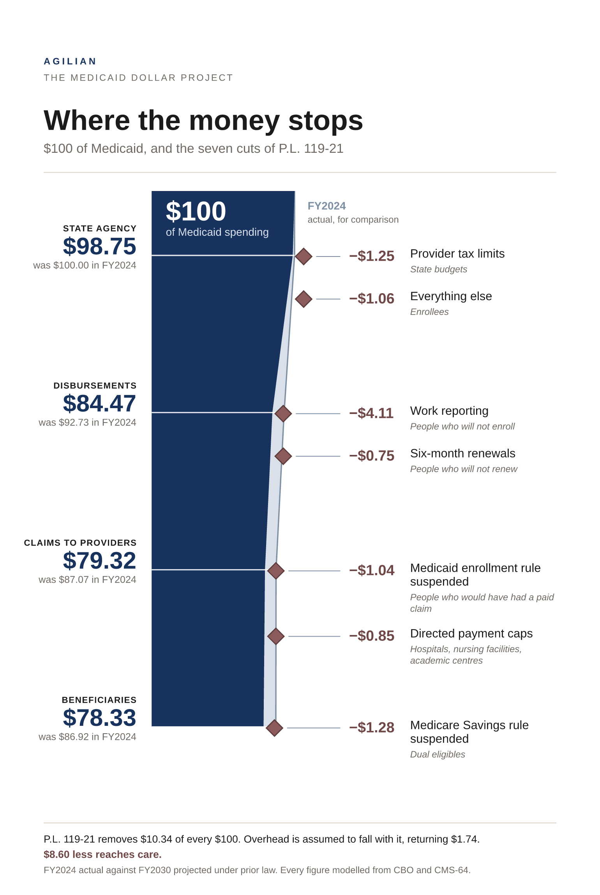
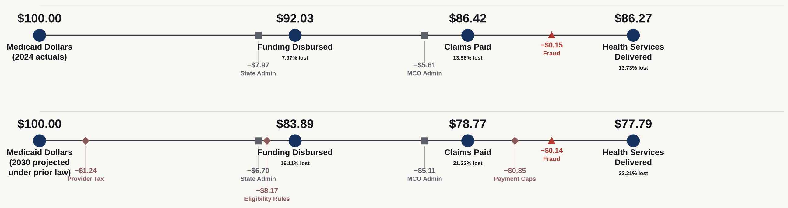
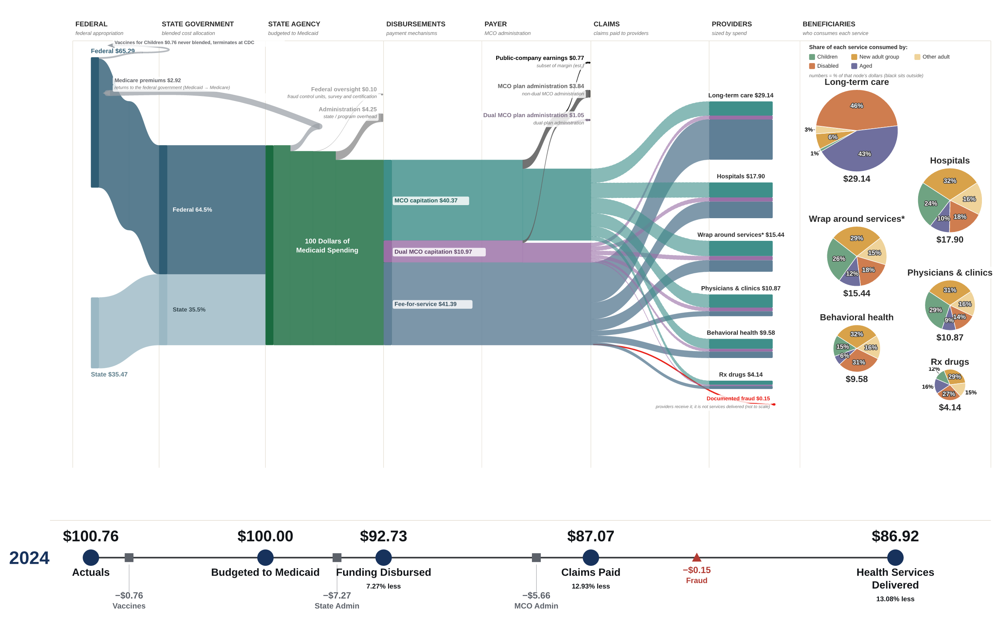
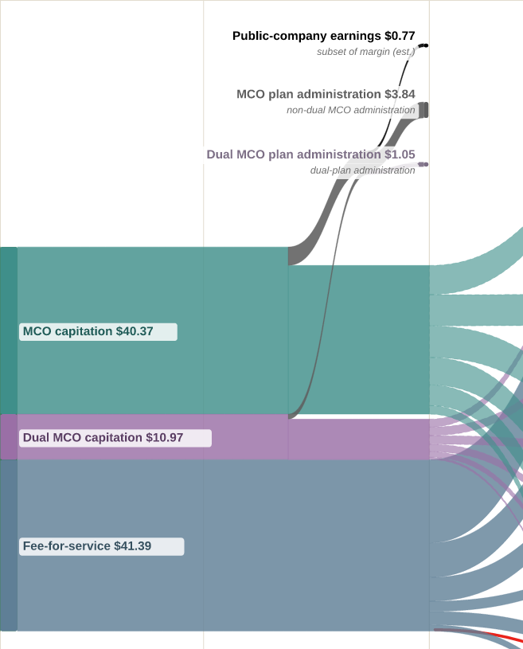
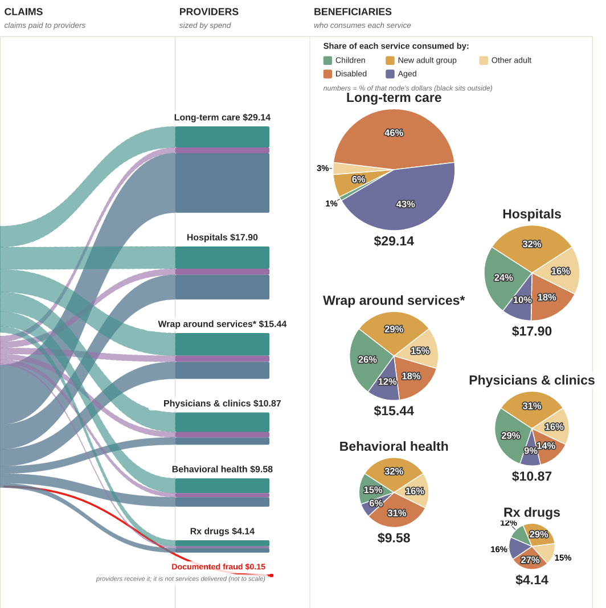
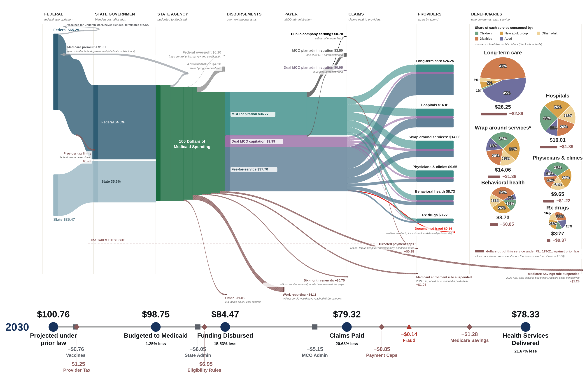
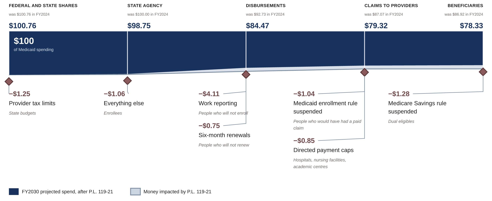
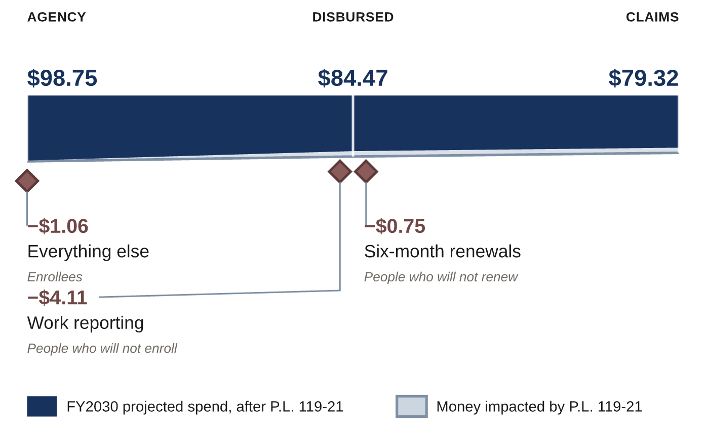
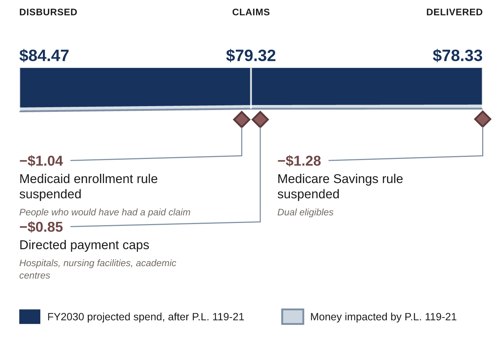
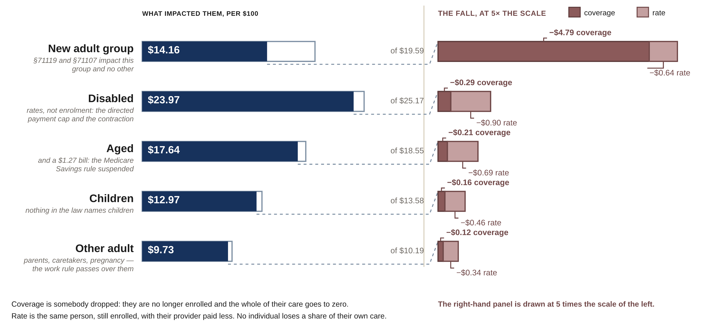

By 2030, fewer people will be enrolled in Medicaid. The providers who treat them will be paid less. The plans that manage their care will have less care to manage, and the states that run the program will have less federal money. That is the impact of P.L. 119-21, the statute most people in Medicaid call HR-1.
Today, of every hundred dollars that moves through Medicaid, $86.92 reaches a health service. Under HR-1, $78.33 will.
The $13.08 that does not reach care today goes to state administration, Medicare premiums returned to the federal government, plan administration, retained earnings and a small amount of documented fraud. By 2030 the law will take a further $10.34 before care, and the share that never becomes a service will rise to $21.67.
The rest of this white paper answers two questions: where do the missing dollars leave, and who is holding the bill when they do.
We built a model of the Medicaid funding lifecycle. It follows a dollar through eight phases, from the appropriation that funds it to the service a person receives, and every dollar that enters is accounted for where it leaves. The diagrams are how that model is read.
The model runs twice, from public sources. The first run covers federal fiscal year 2024 as it actually flowed, the as-was view. The second covers fiscal year 2030 as it would have been before HR-1, with the law subtracted provision by provision at the point where each one bites, the projected to-be view.
Both share a skeleton: same eight phases, same scale, same five anchors on the balance line beneath. A reader can lay them side by side, find their own place in the ecosystem, and understand how their world will change.

Those dollars removed from the ecosystem will not vanish. Care will go undelivered, or go unpaid, or a state will find the money somewhere else. This analysis sizes what will leave the Medicaid ecosystem and says where in the lifecycle it leaves. We stop short of claiming to know where each dollar lands, because the evidence for that routing does not exist at national scale.1
Medicaid and insurance leaders seeking insight into what is happening upstream and downstream of their enterprise. A hospital finance officer knows disproportionate share hospital payments and has no reason to know how cost allocation works at the state. A plan president knows the medical loss ratio floor but may have limited insight into how the provider tax finances their state's share.
This is a framework for visualizing the health and financial impacts of legislative changes to the Medicaid ecosystem.

One hundred dollars of Medicaid spending in FY2024, followed from the state agency that budgets it to the service a person receives.
The FY2024 view is measured. Its figures come from CMS-64 national totals and MACPAC MACStats. Where a figure inside it is derived or estimated, the footnote at that figure says so.
The FY2030 view is modeled in full. Not only the warm bands that carry the law, but the ordinary-looking numbers as well: managed care capitation, long-term care, the beneficiary shares. FY2030 spending before HR-1 is a projection, and the structure of that spending is FY2024 structure carried forward.
Everything the authors know about the project’s limits is in the footnotes and in the register under Limits and sources.
Of every $100 of total Medicaid spending in FY2024, $65.29 was federal and $35.47 was state. That ratio is the blended federal share, the weighted average of what Washington paid across every state and every eligibility category. It is not a single statutory rate. The federal medical assistance percentage, or FMAP, runs from 50 percent in the wealthiest states to roughly 77 percent in the poorest. Adults covered through the Affordable Care Act expansion match at 90 percent wherever they live. The 64.5 percent blend is what falls out of all of it.3
A little more than $100 enters. The federal government buys childhood vaccines outright under the Vaccines for Children program, and that purchase never mixes with state money. Seventy-six cents leaves the federal column before the blend and terminates at the Centers for Disease Control and Prevention. It is counted because it is Medicaid money in the federal accounts, and it is peeled here because it never reaches a state agency and never becomes a payment anyone administers. So $100.76 enters and $100.00 is budgeted to Medicaid at the state agency.
Three things come off the top before a dollar can become a payment.
State and program administration takes $4.25. Eligibility systems, claims processing, staff, and the federally matched administrative expenditure that runs the program.
Medicare premiums take $2.92. For people enrolled in both programs, Medicaid pays the Medicare premium, so the dollar leaves Medicaid and returns to the federal government as Medicare revenue.
Federal oversight takes $0.10. Medicaid fraud control units, and survey and certification of the facilities. It is shown apart from administration because it is money spent watching the program rather than money spent running it.
$92.73 is disbursed. The other $7.27 went to administration, Medicare premiums and federal oversight.
Managed care capitation, $40.37. The state pays a health plan a fixed monthly amount per enrolled person and the plan carries the risk of what that person actually costs. The payment is made whether the person sees a doctor or not.
Dual-plan capitation, $10.97. The same mechanism for people enrolled in both Medicaid and Medicare. It is carved out because the plans are different, the populations are far more expensive, and the law will treat them differently.
Fee-for-service, $41.39. The state pays providers directly, claim by claim, at a rate it sets. Forty-one dollars of every hundred still moves this way.
This national view simplifies what is happening at state and local level around managed care and fee-for-service splits. These views are a baseline against which local conditions can be compared.

Of the $51.34 that goes to plans, $45.68 leaves as claims and $5.65 does not. That $5.65 is the plans' margin: the difference between the premium received and the medical care paid for. It is measured, and it splits two ways.
Plan administration, $4.89, made up of $3.84 on non-dual managed care and $1.05 on dual plans. Administrative load inside a capitation rate is bounded by the medical loss ratio floor, which requires states to set rates such that plans spend at least 85 percent of the premium on medical care. Administration is struck as a percentage of premium.
Public-company earnings, $0.77. Retained earnings at the publicly traded plans.4
$87.07 is paid in claims. The other 12.93 percent stopped at the phases above: administration, Medicare premiums, oversight, and what the plans kept.

| Service | Per $100 | Share of claims |
|---|---|---|
| Long-term care | $29.14 | 33.5% |
| Hospitals | $17.90 | 20.6% |
| Wrap around services | $15.44 | 17.7% |
| Physicians and clinics | $10.87 | 12.5% |
| Behavioral health | $9.58 | 11.0% |
| Prescription drugs | $4.14 | 4.8% |
| Claims paid | $87.07 | 100% |
Long-term care is the largest single block, at a third of all claims paid. Medicaid is the primary payer for nursing facility and home and community-based care in the United States, and no other payer comes close. Hospitals, which dominate most conversations about Medicaid, take roughly two thirds of what long-term care takes.
Wrap around services is a catch all category. It is the plain-language label for everything the source data does not break out separately: other acute care, dental, and behavioral health delivered outside a hospital or a clinic, in that order by dollars.5a
Documented fraud takes $0.15. It is raised in every conversation about Medicaid spending, and it is worth seeing next to the $7.27 of administration sitting four phases to its left.
Measured across all six services in FY2024, of every $100 of Medicaid spending, children received $13.58, the new adult group $19.59, other adults $10.19, people qualifying through disability $25.17, and people aged 65 and over $18.55.5
Children are the largest enrolled group and the cheapest. People qualifying through disability and people over 65 are together about a quarter of enrollment and receive roughly $43 of every $100 spent. A provision that reduces enrollment removes far less spending than it removes people. A provision that touches the aged or the disabled does the reverse.
Before HR-1 did anything, in 2024, $86.92 of every $100 of Medicaid spending became a health service, and $13.08 did not.


HR-1 will remove $10.34 of every $100 of Medicaid spending in FY2030, through seven provisions that leave the ecosystem at five different phases, on four different statutory schedules. They are shown here in the order the money leaves the ecosystem.17
Provider tax limits leave before the federal and state shares merge. They are the only provision that changes how a state finances its own share.
States finance much of their share by taxing providers and using the receipts to draw federal match. HR-1 freezes the applicable percentages for fiscal years beginning on or after 1 October 2026. In expansion states, this provision steps the safe harbor down half a point a year from 6.0 percent, reaching 4.5 percent in FY2030 and 3.5 percent from FY2032. Less provider tax means less state share, and less state share means less federal match.11
This is the only provision that takes money before the state has it. The other six reduce what a state spends. This one reduces what a state has to spend.
| Provision | Section | Per $100 | Would have reached | Ramp, FY2030 |
|---|---|---|---|---|
| Provider tax limits | §71115 | $1.25 | Federal band | 60% |
| Everything else | residual | $1.06 | State agency | full |
| Work reporting | §71119 | $4.11 | Disbursements | full |
| Six-month renewals | §71107 | $0.75 | Payer | full |
| Medicaid enrollment rule suspended | §71102 | $1.04 | Claims | full |
| Directed payment caps | §71116 | $0.85 | Claims | 50% |
| Medicare Savings rule suspended | §71101 | $1.28 | Beneficiaries | full |
| Removed by the law | $10.34 |
The Everything else category contains at least eleven separate provisions, published by the Congressional Budget Office as a single figure. They reduce Medicaid funding at four different phases, and some run in opposite directions. Cost sharing requirements bite from October 2028. Alien eligibility restrictions bite from October 2026. Retroactive coverage changes bite from January 2027. On top of those sit CBO's own interaction adjustments between provisions.

The largest provision by a factor of three. States must impose work and community engagement requirements from January 2027. Good-faith-effort exemptions expire no later than 31 December 2028 and may not be renewed, which is why it is at full effect in FY2030 and not before.
The dollars leave at the disbursement phase because many people who would formerly have been enrolled will not be enrolled under the new provisions. There is no claim to deny and no rate to cut. Every funding stream downstream, capitation and fee-for-service alike, is narrower as a result, which is why this one provision moves all six provider totals.
Renewals initiated on or after 1 January 2027 move from a twelve-month to a six-month cycle. Doubling the frequency of a renewal doubles the number of opportunities to lose coverage for procedural reasons rather than for eligibility reasons.
Agilian has access to data suggesting that losses from six-month renewals will be higher than the CBO figure implies. That work is outside the scope of this paper, and we are happy to share the de-identified data with leaders in the Medicaid ecosystem.

The companion suspension: a 2024 CMS rule that would more broadly have streamlined application, enrollment and renewal. People who would have enrolled will not enroll. It terminates at the claims phase because the money would have become a paid claim.
State directed payments are arrangements under which a state requires its managed care plans to pay certain providers at specified rates, typically well above the plan's ordinary contracted rate. HR-1 caps non-grandfathered payments for rating periods beginning on or after 4 July 2025, and grinds grandfathered payments down by ten percentage points of the original dollar amount each year, not compounding, from the first rating period on or after 1 January 2028, until the 100 or 110 percent Medicare limit is reached.
The impacts of this provision will vary widely from state to state. A state with a small managed care footprint is barely touched. A state that runs nearly all of its Medicaid through plans is exposed across nearly all of its Medicaid spend.
Directed payment caps are the one provision that names the providers affected: hospital, nursing facilities and academic rates.8
Medicare Savings Programs are how Medicaid pays the Medicare premiums, and usually the cost sharing, of low-income Medicare beneficiaries. A 2023 CMS rule would have made them easier to get into. HR-1 suspends it until October 2034.2b
The people who would have been enrolled keep their Medicare, so this provision never appears as lost coverage. It appears as a bill changing hands: a beneficiary poor enough to qualify for Medicaid's help now pays their own Part B premium and deductibles.
These expenses are shifted from the government to vulnerable elderly and disabled people. At $1.28 it is the second largest of the seven provisions, and eight times the documented fraud on the same page.
No provision in HR-1 addresses managed care, directly. Premium revenue falls 8.91 percent, because fewer people are enrolled.
| Flow | FY2024 | FY2030 | Reduction |
|---|---|---|---|
| Fee-for-service | $41.39 | $37.70 | −$3.69 |
| Managed care capitation | $40.37 | $36.77 | −$3.60 |
| Dual-plan capitation | $10.97 | $9.99 | −$0.98 |
| Plan administration | $4.89 | $4.45 | −$0.44 |
| Public-company earnings | $0.77 | $0.70 | −$0.07 |
| Claims paid | $87.07 | $79.32 | −$7.76 |
Administrative dollars fall with premium; administrative obligations do not. Load sits inside the capitation rate allowed to Payers as a percentage of premiums, so a smaller base yields a smaller administrative dollar without anything being negotiated between payers and states. Network management, rate setting and regulatory reporting do not shrink because membership does.
Both sides of the medical loss ratio move at once. Membership falls. The premium base shrinks. Risk pool mix will shift, because eligibility rules remove the members easiest to disenroll, not the members who are most expensive to cover.
Under prior law no money left at claims. A claim was paid or it was not. Under HR-1, $1.90 leaves here: $1.04 of blocked enrollment and $0.85 of capped directed payments. It is the only money in the lifecycle removed after the point where a service could already have been rendered, and it is what a provider's accounts receivable sees first. Where a plan holds directed payment arrangements the cap is an instruction to carry out, but the plan rather than the state will have to renegotiate with providers. This will create a new misalignment of financial incentives between a plan and its providers.
Every provider category loses revenue under HR-1. What differs is the mechanism that reaches them, how fast it arrives, and whether there is anything they can do about it.
Physicians and clinics, hospitals and long-term care carry the directed payment cap on top of the general contraction. Wrap around services, behavioral health and prescription drugs carry only the contraction.8
The rate in the table above is a national average. Actual exposure depends on the state's expansion status, its managed care penetration and the organization's own payer mix. Other variables include whether it currently receives a directed payment, and how far above the Medicare limit that payment sits. Two hospitals in neighboring states can face materially different outcomes from the same statute.
| Service | FY2024 | FY2030 | Reduction | Modeled rate |
|---|---|---|---|---|
| Physicians and clinics | $10.87 | $9.65 | −$1.22 | 11.25% |
| Hospitals | $17.90 | $16.01 | −$1.89 | 10.58% |
| Long-term care | $29.14 | $26.25 | −$2.89 | 9.91% |
| Wrap around services | $15.44 | $14.06 | −$1.38 | 8.91% |
| Behavioral health | $9.58 | $8.73 | −$0.85 | 8.91% |
| Prescription drugs | $4.14 | $3.77 | −$0.37 | 8.91% |
| Health services delivered | $86.92 | $78.33 | −$8.59 | 9.88% |
What is not shown in the table is timing and sequence. Lower enrollment effects will arrive first, through 2027 and 2028, as work reporting and the enrollment moratoria reduce covered lives. Rate effects will arrive later and on a published schedule, as the directed payment grind works through from January 2028. An organization facing both is dealing with two different timelines.
Contract renegotiation with plans becomes the central lever for organizations with directed payments. Cost structure becomes the central lever for the rest, which is why consolidation, closures and the worsening of health care deserts in already underserved communities are widely expected consequences of the law.12
Health services delivered will fall from $86.92 to $78.33 per $100 of Medicaid spending. The fall is uneven across the six services, and it is far more uneven across the people who use them.
This section reads the loss from the beneficiary's side. Every figure below is a margin: what reached people in a category in FY2024, and what impacted them in FY2030.
Each fall splits two ways, and the two are different events. Coverage is somebody dropped: they are no longer enrolled and the whole of their care goes to zero. Rate is the same person, still enrolled, with their provider paid less. No individual loses a percentage of their own care.14
| Who | FY2024 | FY2030 | Coverage | Rate |
|---|---|---|---|---|
| New adult group | $19.59 | $14.16 | −$4.79 | −$0.64 |
| Disabled | $25.17 | $23.97 | −$0.29 | −$0.90 |
| Aged | $18.55 | $17.64 | −$0.21 | −$0.69 |
| Children | $13.58 | $12.97 | −$0.16 | −$0.46 |
| Other adults | $10.19 | $9.73 | −$0.12 | −$0.34 |
| Health services delivered | $86.92 | $78.33 | −$5.57 | −$3.03 |
$5.43 of the $8.60 the provision logic allocates falls on one category, and $4.79 of that $5.43 is coverage. Work reporting and six-month renewals reach the new adult group and no one else: §71119 and §71107 name the population enrolled under §1902(a)(10)(A)(i)(VIII) and reach no other.15 Nothing else in the law is concentrated like this.
What reaches them is not a smaller service. It is the end of enrolment. That is why this category's figure moves by more than a quarter while every other category moves by less than five percent.
Parents, caretaker relatives and pregnancy pathways are the other adult column, and the two provisions above pass over them entirely.15 What is left is the general contraction, which reaches them at $0.46 of the $10.19 that reached them in FY2024 — the same shape as children, who nothing in the law names at all.
The caregiver exclusion is what moves adults between the two categories. It covers a parent or caretaker of a dependent child 13 and under, or of a disabled individual of any age. More than one caregiver in a household may qualify.15 The exclusion for a child expires on a birthday; the exclusion for a disabled dependent does not.
Together these two categories lose $2.10 of every $100 between 2024 and 2030. Three quarters of the impact is rate: Medicaid will pay less for their hospitals, nursing facilities and physicians. The directed payment cap is the largest single mechanism, and it names provider rates rather than any beneficiary group.
Long-term care is the category with the fewest substitutes. A person who loses a physician visit can often defer it. A person who loses a nursing facility placement or a home and community-based services package is not likely to have an alternative arrangement available at lower prices.
Of the seven provisions, six reduce what somebody is paid. One converts a Medicaid payment directly into a household obligation.
The Medicare Savings rule suspension will remove $1.28, and the visible consequence is the Medicare premiums ribbon falling from $2.92 to $1.67. Dual eligibles remain enrolled in Medicare. Their Part B premium does not stop being owed. It stops being paid by Medicaid and starts being paid by a person over 65 living on a fixed income, along with the cost sharing Medicaid would have covered.16
No provider loses revenue in that transaction and no service is cut. A bill moves. It is the clearest statement in the ledger of what "removed from Medicaid" can mean.9
It falls at the undifferentiated rate, which means nothing in HR-1 singles it out and nothing in HR-1 shields it. Its $0.85 is small in the ledger. But it is close to a tenth of that category's total spending, and behavioral health was already the least well-supplied service in most state programs.

Three things this analysis could not do, and what we intend to do about each.
The view at the state level. The provider and beneficiary findings above are national aggregates, and almost every operational decision a reader has to make is a state decision. Expansion status, managed care penetration, provider tax structure and directed payment exposure vary enormously, and they compound rather than cancel. The state editions carry the same eight phases and the same five anchors with that state's numbers in them. A District of Columbia edition is furthest along. Tell us which state you need.
Where the removed dollars land. Saying how the loss divides across care not sought, uncompensated care, out-of-pocket spending and state and local absorption requires evidence that does not exist at national scale today. We are open to ideas about how to expand this research to answer these questions.
Incidence by eligibility category. The most asked question about this law is who bears it. This is not published, and we are pursuing it.
Corrections and challenges are welcome and will be answered in print.
Ten limits that change how a figure on these pages should be read. The full sourcing register, every figure with its vintage and basis, is online.
| Provider tax | The $1.25 blends two mechanisms and carries no gross-up. It understates. |
| Everything else | A residual of at least eleven provisions across four phases, some running opposite to each other. |
| Earnings carve | The $5.65 payer margin is measured. The $0.77 earnings split inside it is estimated, and counts investor-owned plans only; nonprofit plans fall outside it. |
| Class incidence | The FY2030 beneficiary rows are no longer the FY2024 shares times one multiplier. Each provision is allocated to the population its statute names and the rows fall at different rates, which is a finding rather than an artifact. The allocation is ours and is not published anywhere; only the margins are printed, and the service-by-population interior behind them is not, for the reason in note 13. |
| Service incidence | Only §71116 names providers. For the other six provisions, the fall at a given bar is the sum of several mechanisms in proportions nobody has published. |
| Price growth | Withdrawn from the diagrams by construction. It cannot be recovered by differencing two spending projections. |
| FY2030 | Every figure on the to-be diagram is modeled, including the ordinary-looking ones. |
| The beneficiary exercise | The per-population figures in Health services to beneficiaries are ours, not published anywhere. Each provision is allocated to the population the statute names and then across services by that population's measured FY2024 consumption. Only the margins are published; the interior is declared in note 13 and is not reliable. The coverage and rate classification is also ours, and the residual, classed as rate, is mixed. |
| The adult split | MACStats Exhibit 21 publishes five eligibility columns; earlier editions of this paper summed the two adult columns into one. The split restores the exhibit's own 22.5 and 11.7 percent. It is what makes §71119 and §71107 statable of the population they name, and it is the reason the FY2030 figures in that section are no longer a single multiplier applied to every group. |
| The pie interiors | The six pies are fit by iterative proportional fitting to the service totals and the eligibility-group totals, from a seed pattern that carries no citation. Both adult rows take the seed the single adult column carried. The beneficiary cube in note 13 reads off those interiors and inherits the whole of that weakness. |
Primary sources: Congressional Budget Office supplemental of 28 October 2025 and letter of 5 March 2025; CMS-64 financial management reports; MACPAC MACStats, February 2026; P.L. 119-21, Title VII, Subtitle B; annual filings of the publicly traded managed care organizations. Full register at the address on the back page, matched to build {{BUILD_ID}} of {{RELEASE_DATE}}.
The two diagrams are produced by a model the firm wrote. The ledger, the geometry and the balance line are code, and every figure in this paper is read from that code at build time rather than typed into the prose. Claude, made by Anthropic, was used throughout as an analyst and drafting partner: working through the statutory phase-in schedules, deriving the provision allocation, building and auditing the rendering pipeline, and drafting these sections.
No figure here was supplied by a language model from memory. Statutory dates and CBO figures are taken from the documents and recorded with their vintages. What the analysis claims, and what it declines to claim, was decided by the named authors.
1. A dollar removed from the ecosystem becomes one of at least four things: care not sought, care delivered and written off, care paid out of pocket, or a cost absorbed by a state or local budget. No national source splits those four. One randomised finding is relevant and is deliberately not applied to any figure in this paper: the Oregon Health Insurance Experiment implies people losing coverage reduce medical spending by roughly a quarter against what they would have spent with it. That is a causal estimate for able-bodied adults below the poverty line who wanted coverage, close to the population work requirements reach. It establishes that utilization falls. It says nothing about what happens to the portion that does not fall.
2. Both diagrams read in dollars per one hundred dollars of Medicaid spending: the FY2024 diagram divides actual FY2024 spending, the FY2030 diagram divides projected FY2030 spending before HR-1. The point is comparability. The same denominator governs both, so every node sits in the same place and every band means the same thing, and when the state editions publish a state Medicaid executive will be able to compare their own $100 against this national baseline. The cost is that the hundred dollars is a unit rather than an amount of money: medical prices will rise between 2024 and 2030 and Medicaid spending will rise with them, and dividing by the total removes anything that moves the numerator and the denominator together. Reinserting price growth as a deduction near the provider end of the FY2030 diagram applies a price level to an index number, which is a mixed-basis comparison and produces a figure that reconciles with neither diagram. The quantity that belongs to the margin question is a ratio rather than a level: the gap between growth in Medicaid payment and growth in provider input costs. That requires a provider input-cost measure such as a CMS market basket index set against the CBO payment path. It cannot be constructed by differencing CBO's five percent against the CMS Office of the Actuary's 5.8 percent per-enrollee projection, because both are projections of spending rather than measures of cost.
2a. The hundred dollars is struck at the state agency. It was struck at the appropriation until September 2026, and moving it changed two things a reader of the earlier draft will notice. Every figure below the agency rose by about three quarters of a percent, because the denominator fell by that much once the money that never reaches a state agency stopped being counted in it. And the share of the hundred that never becomes a service in FY2030 fell from 22.21 percent to 21.62. Nothing in P.L. 119-21 changed. The vaccine purchase used to be counted as a loss and is not one: it buys vaccines, it reaches the children it is meant to reach, and it was only ever inside the hundred because of where the line was drawn. Losses are now measured from the hundred, so the vaccine is not one and the FY2030 provider tax limit, which does take money the states would otherwise have had, is.
3. The federal share was 69 percent in FY2023 and fell to 64.5 percent in FY2024 as the enhanced match from the public health emergency unwound. A baseline built on FY2023 carries a structurally wrong split between Washington and the states, and every leverage figure downstream of it inherits the error.
4. The $5.65 payer margin is measured and the ledger conserves whatever the split inside it. The $0.77 earnings carve is estimated and has not been reconciled to Medicaid segment disclosures. Nothing downstream of the payer phase moves if the carve changes. Because this band counts publicly traded plans only, retention by nonprofit and provider-sponsored plans sits inside the $4.89 labelled plan administration.
5. These five totals are measured for FY2024 and describe composition: who the money reaches today. They do not support a claim about incidence: who loses money under the law. See note 9.
5a. The fee-for-service half of the node is $61.3B in CMS-64 FY2024, split $55.1B other acute and $6.2B dental. Other acute is itself a bundle: non-emergency medical transportation, durable medical equipment, EPSDT, hospice and laboratory. The behavioral health portion is the two MACPAC care settings that are neither a hospital nor a clinic, substance use disorder residential treatment and a residual called other settings, which together are 20.4 percent of behavioral health service spending. The capitated half is allocated by the same key as every other node and is not separately observed. The ordering in the body text holds at the level the source breaks out; within other acute it does not, because no source in this paper splits that bundle.
6. How much of the $1.06 is cost sharing, how much is alien eligibility and how much is retroactive coverage is not published. CBO's interaction adjustments between provisions are not separable from the provisions themselves.
7. This is an assumption. Eligibility systems, staff and claims processing do not obviously shrink when a caseload does, and the law is silent. If it is wrong, the entire overhead picture moves.
8. Physicians and clinics, hospitals and long-term care carry the §71116 directed payment cap on top of the general contraction, in proportion to how much of each one’s Medicaid revenue arrives through a directed payment in the capitated leg. Wrap around services, behavioral health and prescription drugs carry no cap, and all three fall at exactly the same rate, 8.91 percent, because the same single eligibility-side contraction reaches all three and nothing in the statute distinguishes them. Three services landing on one number is the absence of a service-specific finding rather than the presence of one. The printed figures are rounded at the second decimal and the rounded falls need not sum to the rounded difference; the ledger conserves exactly.
9. How the loss falls across children, the new adult group, other adults, the disabled and the aged is not published, and we are pursuing it. The mechanisms point in directions that do not cancel, which is why no estimate appears here. Work reporting, the largest provision at $4.11, applies to expansion adults and largely exempts the aged and people qualifying through disability. Blocked senior enrollment falls only on the aged. Directed payment caps fall on hospital, nursing facility and academic rates, which reach the aged and the disabled far more than they reach children. Splitting the $8.59 across the five categories using FY2024 shares would publish an assumption as a finding.
10. A reader of Figure 5 can watch a provider bar shrink and cannot see which of the seven levers did the shrinking. The diagram draws a bar that shrank because people lost coverage identically to a bar that shrank because a rate was capped. The first means care not delivered; the second means the same care delivered for less money.
17. Why fiscal year 2030. Choosing FY2030 to compare against the baseline was an exercise in compromises and trade-offs. The provisions do not all start at once and they do not all reach full force at once. Two enrollment moratoria took effect on enactment. Work reporting begins in January 2027 and its good-faith exemptions expire at the end of 2028. The provider tax safe harbor steps down half a percentage point a year from FY2028 and does not bottom out until FY2032. The directed payment cap grinds down grandfathered payments ten points of the original amount each year with no statutory end date. In FY2028 and FY2029 only twenty percent of the ten-year overlay will be at full statutory effect. FY2030 is where 62.6 percent of the ten-year effect is at full force, every provision has started, and the two still ramping are visible. FY2030 will not be the worst year. Provider tax limits will be at 60 percent of their eventual effect and directed payment caps at 50 percent. The $10.34 is a figure in the middle of the change, not the end of it.
11. The $1.25 blends the expansion-state phase-down with the national freeze and carries no state match. The true figure is larger.
12. Consolidation and closure expectations are widely reported in the trade and policy literature. No figure in this paper is derived from them and none is cited here as evidence.
13. The full service-by-population interior exists in the model and is not published, because it contradicts figures on these pages in two different ways and we will not print a number we would have to withdraw. Left unraked, it disagrees with the service falls in Provider revenue at every one of the six bars: it puts $1.89 on long-term care against the $2.89 published there, and $2.24 on hospitals against $1.89. Raked to those published falls, it then asserts that the new adult group loses 43.7 percent of its own long-term care, which no mechanism in the statute supports. The margins in the table above do not depend on the interior and are unaffected by either failure. The per-population totals sum to the $8.60 the provision logic allocates, which differs from the printed service-side balance by rounding at the second decimal, on the convention in note 8.
14. The coverage and rate classification is ours. Work reporting, six-month renewals and the Medicaid enrollment rule suspended are classed as coverage; provider tax limits, the directed payment caps and the residual as rate. The residual is mixed: its largest named components reduce what is paid rather than who is enrolled, which is why it sits on the rate side, but cost sharing lands on a household. The coverage and rate components sum to $5.57 and $3.03.
15. §71119 (work reporting) and §71107 (six-month renewals) apply to individuals enrolled under §1902(a)(10)(A)(i)(VIII) — the new adult group — and reach no other eligibility pathway. The caregiver exclusion covers a parent or caretaker relative of a dependent child 13 years of age or under, or of a disabled individual of any age, and more than one caregiver in a single household may qualify. MACStats Exhibit 21 footnote 4 defines the other adult column as those under 65 who qualify through a pathway other than disability or §1902(a)(10)(A)(i)(VIII): parents, caretaker relatives and pregnancy.
16. 2026 amounts. The Medicare Part B premium is $202.90 a month, $2,434.80 a year, with a $283 Part B deductible; the Part A deductible is $1,736 per benefit period. A Qualified Medicare Beneficiary has premiums, deductibles and coinsurance paid; a Specified Low-Income Medicare Beneficiary has the premium only.